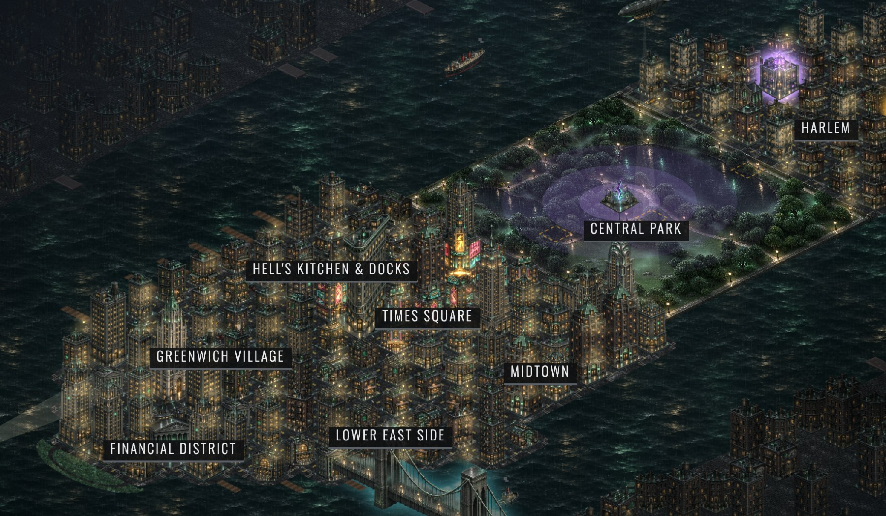
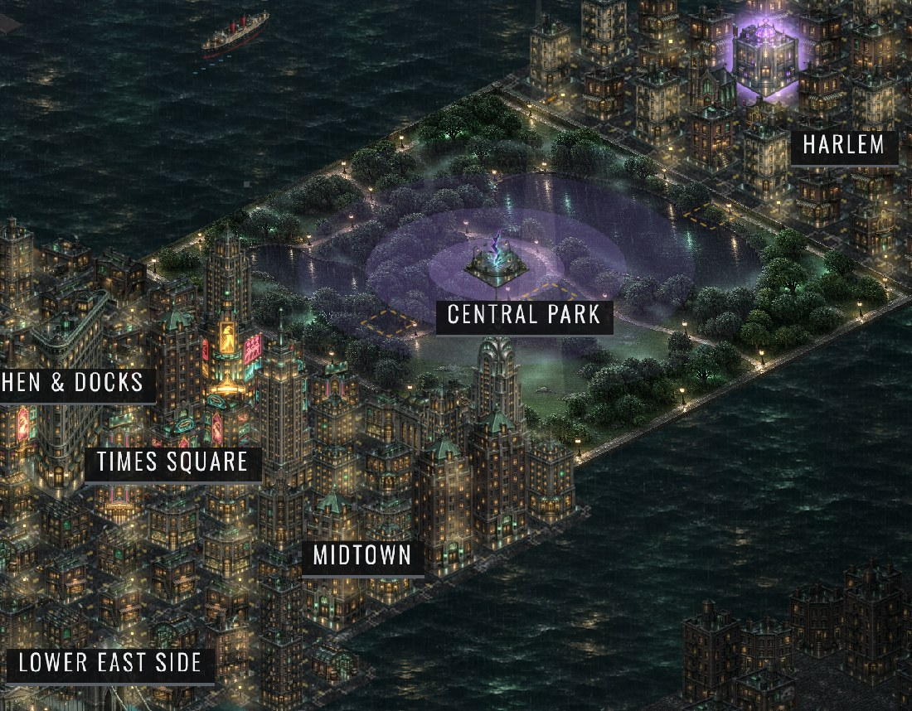
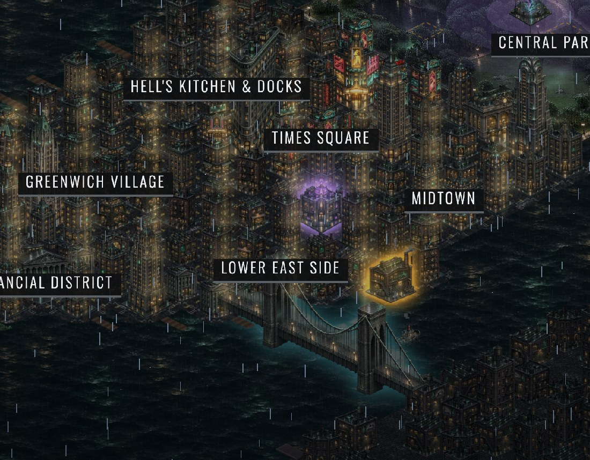
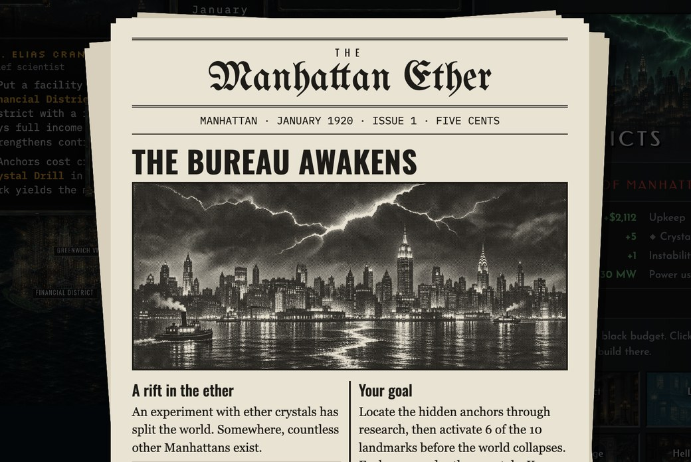
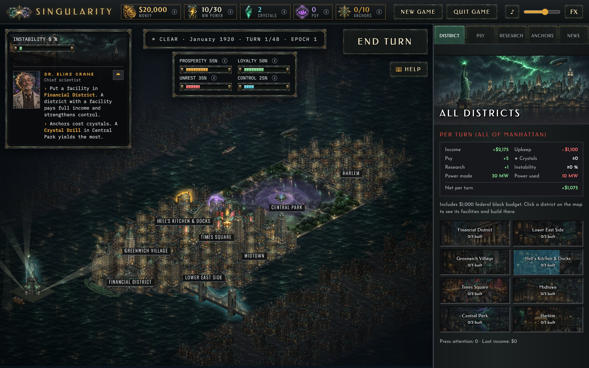
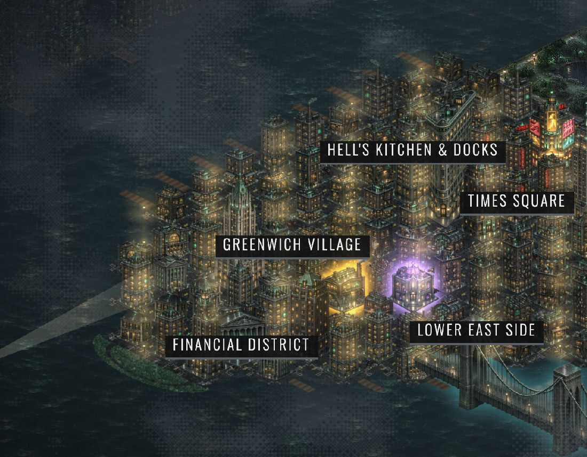

Run 1920s Manhattan as the government nobody knows exists. One city, countless parallel universes – and only ten anchors to hold and stabilize your universe.
THE CONCEPT
It is 1920, and you run a secret program of the United States government – a hidden division of the Bureau of Investigation that steers Manhattan while the public suspects nothing. You don't build streets; you work through laboratories, generators, radio towers and a strange new power called psy. An experiment with ether crystals has split the world into countless parallel Manhattans, and every player's bureau governs one of them. You play at your own pace: the timelines only meet at sync points, where trades through time portals, glimpses into rival worlds and seized landmarks are resolved. Across the whole multiverse there are only ten anchors – hidden landmarks that must first be located through research or by famous scientists like Nikola Tesla who secretly join your bureau – and whoever holds six keeps their universe stable while everyone else falls into the singularity. Meanwhile rain, fog and thunderstorms roll over the rivers while zeppelins drift above the skyline.

SCREENSHOTS




Single-player, in your browser, on desktop and mobile.